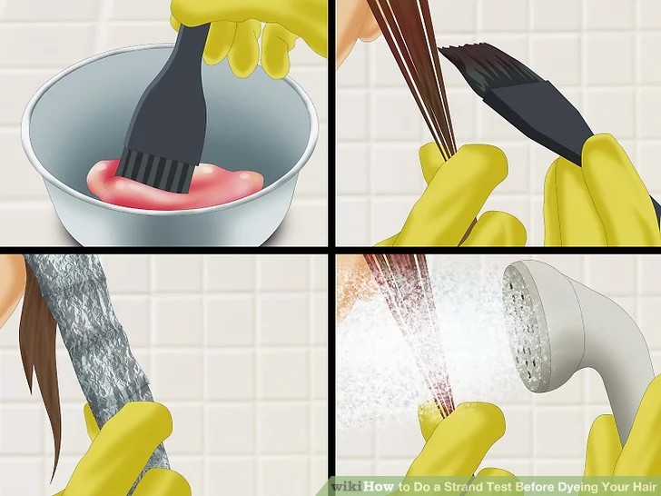
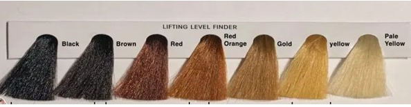
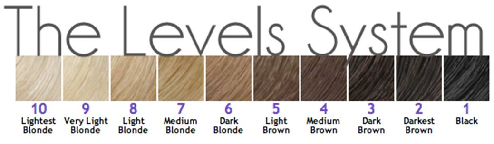
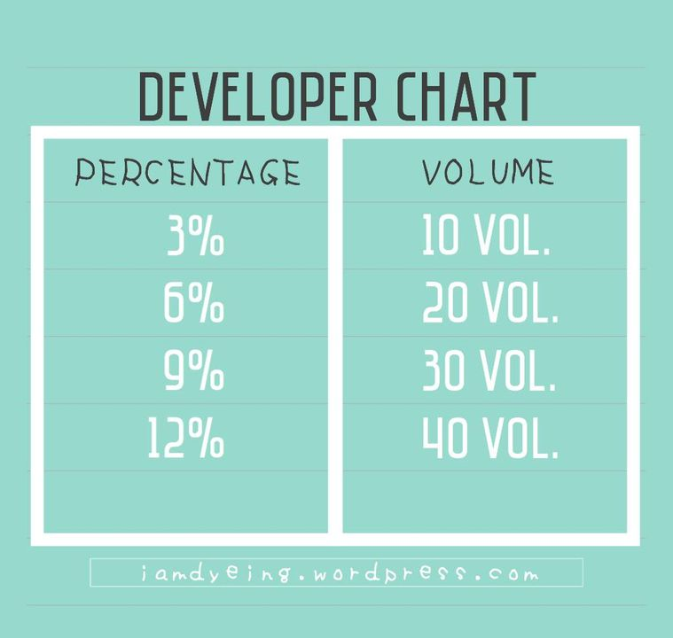
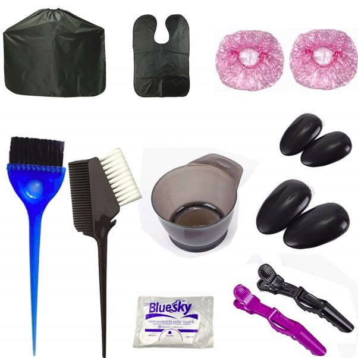
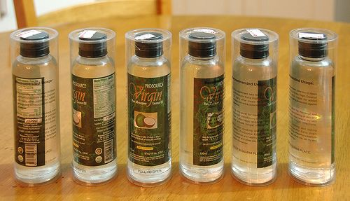
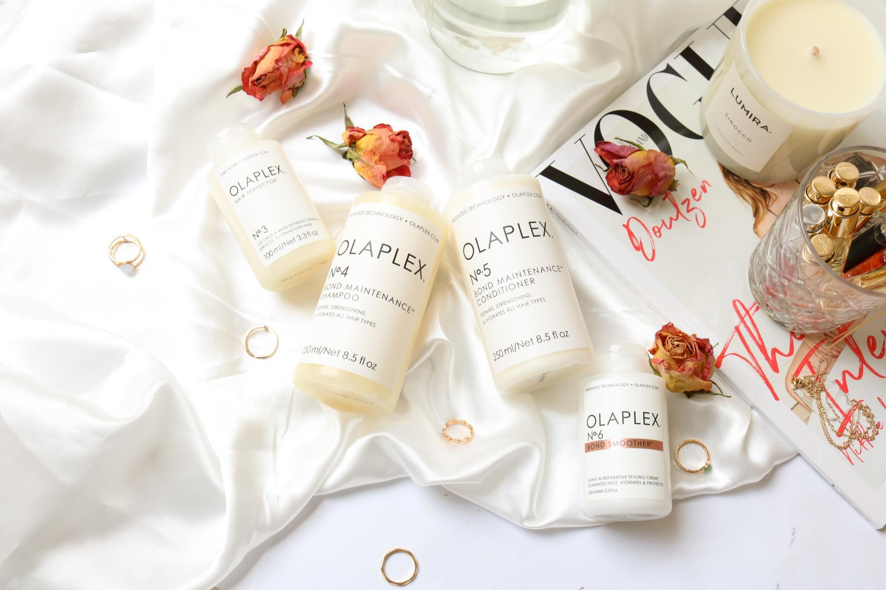

Here are some tricks and tips to prevent DIY bleaching damage!!
NOTE!!! IF YOU PUT BLACKENING HAIR PRODUCT (HAIR DYE, SHAMPOO, ETC) ON YOUR HAIR,
PLEASE STOP READING BECAUSE THIS WILL NOT APPLY TO YOU.
YOUR HAIR NEEDS TO UNDERGO HAIR COLOR REMOVAL FIRST BEFORE YOU PROCEED TO THIS.
First off, you need to understand that it is a process. It usually takes multiple sessions of bleach and/or toner, and it's recommended you space those sessions out to avoid doing too much damage. So keep in mind the fact that you might end up walking around with orange hair for a few weeks, if this is your first time.
Just know that bleach hurts and can give you chemical burns. If you're in a lot of pain, just wash it off immediately; don't risk hurting yourself.
PLANNING
Strand Test
For bleaching, you should check your strand test by rubbing off some of the bleach from the hair every 5-10 minutes to check how much the hair has lightened. Timing is important so make sure you note how long the bleach has been processing at each stage. After checking reapply bleach and re-cover the hair strand.

Lift Level:
Before doing anything, you need to know first what level of lightness you need. What color are you aiming for? Is your target a pastel peach or a dark purple shade?
End-results of the same dye vary with different hair lightness levels, so if you’re unsure, it would be best to look at color swatches.

As a general rule of thumb, you should be aiming for these levels
if you wanna color your hair a specific shade:
Reds and other warm colors - level 6 and below
Dark blue and green - level 7 and below
Blue and green - level 8
Vibrant colors (from turquoise to cherry red) - level 9
Platinum, pastel colors and silver - level 10

Preparation Before Bleaching
1. STRENGTHEN YER HAIRRRRRR
It would help if around two weeks before the bleaching, you'd load in a ton of vitamins, nutrients, and all sorts of TLC to your hair. Deep condition, get keratin, use argan oil / VCO soaks, and anything you could think of. Also avoid direct sunlight and using heat styling tools like blow dryers, curlers, and also ~ m o i s t u r i z e~ !!
2. PREP YER STUFF
Things to note/buy:
When bleaching, you usually need bleach powder and you mix it with developer (sometimes called Oxidizing Lotion).
The developer comes in various strengths – 40 VOL, 30 VOL, 20 VOL, 10 VOL, Sometimes these are labeled as %, see chart below. It is recommended to use only 30 VOL / 9% developer or less.

FOR THE LOVE OF GOD, IF YOU DIY, PLEASE DO NOT USE 40 VOL,
IT IS TOO STRONG. YOUR HAIR WILL BE FRIED.
Those with thin, brittle hair or a sensitive scalp should never use
a high percentage developer (40 VOL / 12%).
Pro tip: Get a friend or two to help you apply your bleach because oxidation is an extremely time sensitive process. Apply it too slow and a section of your hair will be fully developed while the others are still ‘cooking’. if you don’t rinse this out, the ‘cooked’ portion will fry or get damaged while the ‘under cooked’ portions will be brassier than the effing sun. No one wants that…ever.
So practice if you have to with your strokes prior application. Aim for 30 minutes MAX for application time. This alone will decrease your chances of damaged hair significantly.
Get the usual essentials:
brush/comb thing, gloves, plastic bowl, plastic hair clips, ear caps, shower cap, foil, old t-shirt (preferably white/light color as the bleach will... well, bleach it), a hairdresser's cape / huge trash bag u can use as a cape / a towel you will sacrifice to the bleaching gods.
I know most of you know this by now, but for the newbies, please use plastic things only when bleaching! … Once more for the people at the back, PLEASE USE PLASTIC THINGS ONLY WHEN BLEACHING!! (mixing spoon, bowl, etc) Here’s why:
~ Copper and iron bowls can oxidize or rust very easily and can result in very active metallic ions (strong catalysts) that may leach into any liquid medium contained in these bowls. Because of these strong catalysts, bleach mixtures prepared in these metallic bowls frequently break down and lose their lifting power. ~

Pls buy Virgin Coconut Owel and stock up on keratin treatments / deep conditioners.
You'll be using these before and after the session.
Pro tip: Coconut oil is one of two oils that have the molecular structure to fully penetrate the hair cortex (the other being olive oil). However, unlike olive oil that only have moisturizing properties, coconut oil has both moisturizing and strengthening properties along with antibacterial, anti-fungal and antiviral tossed in there somewhere. SO it is safe to say the coconut oil is the ULTIMATE HAIR OIL. What’s stronger? Well…gata but not all have time to get gata so cold-pressed coconut oil will do.

If you can, PLEASE GET OLAPLEX!!
It's a life-changing thing. It is a bond-repairing treatment that you can use after you bleach. There are two variants you can use: Olaplex 2 and Olaplex 3.

Vegan/Semi Permanent Hair Colors from Arctic Fox